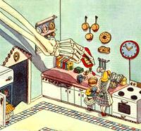
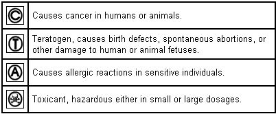

Hazardous Household Substances
Information is the key to consumer self-defense, including definitions, food additives, kitchenware, household products, pesticides, cosmetics, building materials.
By the Mother Earth News editors
July/August 1986
From Mother No.87
Information is the key to consumer self-defense.
Without chemicals, life itself would be . . . at the least, somewhat less convenient. Each day the average American uses (directly and indirectly) hundreds of laborsaving formulations, and even the conscientious consumer is likely to be coerced into pushing the buttons on a few spray cans. In the last 50 years, chemicals (that is, those of the synthetic variety) have become an integral part of the U.S. way of life-not to mention of our economy.
It would be easy to rail against the trend. After all, a hundred years ago people got along pretty well without an arsenal of aerosols. What's more, the harmful effects of chemical production and the disposal of its by-products may be the most serious environmental problems facing the country today. Indeed, there are frighteningly dangerous compounds that continue to be manufactured and used, despite widespread scientific knowledge of (and complaints about) their harmful effects. And only public outcry will bring grease to the wheels of regulation in a government bogged down in bureaucracy and badgered by commercial interests.
Nonetheless, it's consumer self-defense (not action) that's the subject of this article. As you'll learn in the following pages, federal regulation is no assurance of safety from a whole array of compounds we are exposed to in our own homes. We'll be discussing substances that are much more sinister than newsworthy contaminants such as dioxins or polychlorinated biphenyls (PCBs), even though they're much less dangerous on a perunit basis. Most consumers are practically unaware of them, because the compounds may go unmentioned on labels or because their names are indecipherable. Some of the chemicals are additives that are known to be hazardous. Others are dyes or flavorings that have never been adequately tested. But the most insidious aspect to the proliferation of chemicals in the household is that most of us expose ourselves to these laborsaving elixirs for hours on end in our own homes every day. In effect, we live in chemical warehouses.
What Is Hazardous?
There are a number of different and fairly obvious ways in which chemicals can harm us, but judging the degree of risk is a very difficult matter. Toxic compounds-denoted in the following list by a skull and crossbones-cause one or more of a variety of bodily malfunctions. Perhaps they depress the central nervous system, making us drowsy or even causing death. Or maybe they attack the liver, where they accumulate when they're cleaned from our blood.
The issue of toxicity is complicated by the fact that bodily harm can be produced in a couple of different ways. A toxicant is said to be acutely toxic if it produces a reaction soon after a single ingestion; a chronic poisoning may not produce symptoms until the compound has accumulated to a threshold level in the body-days, months, or years later.
Scientists have developed a system for denoting the comparative acute toxicity of substances. Known as "lethal dose, 50%" (LD 50 ), it indicates the amount of a compound that must be administered to cause half of the test sample to die. For obvious reasons, LD 50 tests aren't run on humans; mice or rats are the most common "guinea pigs." The results can't be directly compared to human exposure, though, because animals don't necessarily react to toxicants in the same ways people do.
The tested chemicals are also administered in different fashions-orally, by under-skin injection, directly into the stomach, etc.-which can influence the outcome of an experiment. A substance may not be readily absorbed through the skin, while inhalation may allow it to pass through lung tissues and into the bloodstream quite easily.
Furthermore, LD 50 isn't necessarily a good measure of chronic toxicity. Though a large quantity of a compound may be required to produce immediate death, much smaller amounts may add up-over continuous exposure-to life-threatening levels. (Lead poisoning is a good example of this phenomenon.) Extended, expensive studies are required to determine chronic effects.
There are further complications in the matter of determining the safety of a substance. For example, though allergy studies are seldom done prior to the introduction of a chemical on the market, many substances can have life-threatening effects on people with asthma. In the following guide, substances that can produce allergic reactions in some people are denoted by a circled A.
Though the measure of a chemical's toxic or allergenic effect on humans is inexact, those techniques are models of precision compared with the process of calculating a compound's cancer-causing potential. First of all, there's the unanswered question of how cell mutation relates to cancer. If a compound produces genetic mutation in laboratory experiments, it's said to be mutagenic. If it produces cancer in humans or animals, it's said to be carcinogenic, and we've denoted it with a circled C. Most, but not all, mutagens turn out to be carcinogens; so far, all carcinogens have proven to be mutagenic. Yet another type of mutating (but not necessarily cancer-causing) compound is a teratogen-indicated by a circled T-which causes malformation in the fetus.
Substances are tested for carcinogenicity by administering large dosages (usually hundreds or even thousands of times the amount found in normal human exposure) to laboratory animals over a period of a few weeks to a few years. It is assumed that the production of cancerous cells (if there is any) can be speeded up by increasing the dosage to very high levels. Industry isn't patient enough to wait 20 or 30 years to look for evidence of increased cancer from the use of a substance they propose to offer to the public.
This manual highlights only those toxicants and carcinogens that you're least likely to know about and that have been judged by experts to pose the most hazard to you. There are a number of important areas that we've been forced to pass over because we haven't enough space to address all the hazards around the house. [NOTE: For a more complete listing, see the original article in MOTHER NO. 87] In general, we've tried to hit the topics where consumers are least protected and most likely to be unaware of the hazards. Hence we've not covered the synergistic reactions that can occur between common ingredients and prescription drugs. Your physician should inform you of such possible interactions whenever he or she writes a prescription. Nor have we covered potentially dangerous household appliances, from microwave ovens to lawn mowers. All of the items listed in the following pages are substances that can cause you harm.
Food Additives
Artificial food coloring: These substances need only be listed as "artificial color," except for FD&C Yellow No. 5, which is considered hazardous by the FDA.
• Hazards: FD&C Yellow No. 5 (Tartrazine), a coal-tar derivative, causes allergic reactions in people sensitive to aspirin. Citrus Red No. 2 is a known carcinogen but is still used on the skin of oranges. FD&C Green No. 3 is a suspected allergen and produces malignant tumors when injected under the skin of rats. (Subcutaneous injection is no longer considered to be a valid cancer test, after a report by the Food and Nutrition Board.) FD&C Red No. 40 has been found to produce tumors in rats and is undergoing further study.
Artificial coloring is also associated with hyperactivity in children. Dosages only slightly higher than the national average intake of a mixture of eight colors have caused significant increases in hyperactivity.
• Found mainly in cosmetics, beer, and many foods. Only Yellow No. 5 must be listed specifically on a label.
Aspartame: A sweetener with approximately 160 times the sweetness of sugar.
• Hazards: Persons with phenylketonuria (PKU) cannot process aspartame. Its accumulation in their bodies can cause retardation and death. Acts synergistically with MSG, a similar compound.
• Found mainly in beverages, cereals, chewing gum, gelatins, and puddings.
BHA/BHT (butylated hydroxyanisole/ hydroxytoluene): A compound used to prevent fats and oils from becoming rancid.
• Hazards: Enlarges the livers and kidneys of test animals. May cause enzyme changes that make the body more susceptible to cancer or affect reproduction.
?
?
• Found mainly in baked goods, beverages, breakfast cereals, candy, chewing gum, gelatins, ice cream, potato chips, shortening, and vegetable oils.
BVO (brominated vegetable oil): Used to stabilize flavoring oils and to provide a cloudy appearance. Derived from corn, cottonseed, olive, sesame, and/or soybean oils.
• Hazards: Has caused damage to the hearts and livers, and has increased fat deposition in the livers and kidneys, of test animals. Some forms have brought on testicular changes, have reduced growth, and have produced lethargy in test animals. Deleted from GRAS (the federal "Generally Recognized as Safe" list) but still lawful for use.
• Found mainly in baked goods, citrus carbonated beverages and fruit juices, and ice cream.
Caffeine: A stimulant that occurs naturally in coffee, tea, chocolate, kola nuts, etc., and which is added to many other products.
• Hazards: Addictive. May be a teratogen. May cause peptic ulcers and heart ailments. Tolerance of young people may be much lower than that of adults.
?
• Found mainly in carbonated beverages, chocolate, coffee, and tea.
Ethyl methyl phenylglycidate: Used as a berry flavoring.
• Hazards: Causes testicular atrophy and growth retardation in male rats; hindquarter paralysis in female rats. Adverse neurological effects.
• Found mainly in baked goods, beverages, candy, chewing gum, frozen dairy confections, and gelatins.
Modified food starch: Used as a thickening and gelling agent and to prevent lumping and sticking of powdered products. Produced by chemically treating starch.
• Hazards: Can cause diarrhea, slowed growth, and calcium deposits in the kidneys. Some are not very digestible. Maintenance of GRAS rating under consideration.
• Found mainly in baby foods and packaged baked goods.
MSG (monosodium glutamate): Used as a flavor enhancer.
• Hazards: Causes brain damage in test animals. Has produced reproductive dysfunctions in test animals. Female animals conceive less frequently and have smaller litters. There is evidence of learning impairment in rats. It is thought responsible for "Chinese restaurant syndrome," the symptoms for which include chest pain, headache, numbness, and burning sensations.
• Found mainly in baked goods, beer, candy, Chinese cuisine, condiments, meat, pickles, and soup.
?
Nitrites, nitrates: Used to inhibit botulism-causing microorganisms; also to improve color and flavoring. Now controlled in alcoholic beverages.
• Hazards: May combine with amines to form nitrosamines, some of which cause cancer at low levels of concentration. Can inhibit the ability of blood to carry oxygen, especially in infants. Some forms affect fertility, reduce prenatal growth, and increase prenatal mortality. Used in forms bound with sodium, which has been shown to increase blood pressure.
• Found mainly in processed meats-such as bacon, corned beef, ham, hot dogs, luncheon meat, and sausage-and smoked fish and poultry.
Saccharin: A widely used calorie-free sweetener.
• Hazards: A demonstrated carcinogen in test animals.
• Found mainly in dietetic foods.
Smoke flavor: Condensate from burning hickory or maple wood.
• Hazards: There are a number of carcinogens present in wood smoke. Benzo(a)pyrene is removed from the commercial products, but other cancercausing substances may remain. Probably less dangerous than natural wood-smoking.
• Found mainly in baked beans, barbecue sauces, cheese, fish, and meats.
Sulfiting agents: Potassium bisulfite, potassium metabisulfite, sodium bisulfite, sodium metabisulfite, sodium sulfite, and sulfur dioxide are used to bleach and preserve, prevent browning, and sterilize. Ban of use on fresh produce proposed by FDA.
• Hazards: People with allergies or asthma may have severe reactions. Can cause vitamin B, and E deficiencies.
• Found mainly in processed vegetables, fresh seafood, prescription drugs, beer, and wine.
Tannin: Used for its astringent taste.
• Hazards: Has caused tumors and death in test animals.
• Found mainly in baked goods, beer, candy, ice cream, and wine.
Kitchenware
Earthenware: Pottery coated with glazes.
• Hazards: Lead and cadmium may be leached from the glazes by acid-containing foods. Some glazes may crack or craze, releasing material into food. Lead causes brain damage, blindness, and mental retardation. Children absorb four times as much as adults per unit ingested. Cadmium causes abdominal pain, vomiting, anemia, kidney dysfunction, diarrhea, and (if inhaled) pneumonia.
Household Products
Aerosols: Used to disperse active ingredients in a variety of household products.
• Hazards: Beyond the hazards of the active ingredients in aerosol sprays and the possibility of explosion, the propellants themselves present a danger. Today, most propellants are either nitrous oxide (which is associated with brain damage and may cause cancer) or propane (which is highly flammable). Aerosol sprays produce vapors that can easily be inhaled deep into the lungs, greatly increasing the hazards of any toxicants contained in the product or which are carried with it.
?
Ammonia: Used for its chemical action on organic matter.
• Hazards: Inhalation of concentrated vapors causes edema of respiratory tract, spasm of the glottis, and asphyxia. More important, mixing with chlorine bleach produces toxic chloramine gas.
Di(2-ethylhexyl)phthalate (DEHP): Used to soften polyvinyl plastic teething rings, pacifiers, soft toys, dialysis tubing, and blood bags.
• Hazards: Causes cancer in animals.
Formaldehyde: Common in air fresheners. Also found in cosmetics such as eye makeup, nail polish (up to 5%), deodorants/ antiperspirants, shampoos, and some mouthwashes.
• Hazards: Causes irritation of the eyes, nose, throat, and skin. As much as 4% of the population becomes sensitized to it and reacts at even small concentrations. Causes nausea, headaches, nosebleeds, dizziness, memory loss, and shortness of breath. Inhalation has caused cancer in animals. For information on a formaldehyde test, write to Air Technology, 815 Harbour Way South, Richmond, CA 94804 or Dosimeter Corp., 6106 Interstate Circle, Cincinnati, OH 45242.
• Found in cigarette smoke and in building materials and furnishings, such as ureaformaldehyde insulation; interior plywood, particleboard, and paneling; synthetic countertops; glue; oil-based paints; plaster of paris; plastics; paper products; and synthetic fibers, including clothing, upholstery, drapes, and carpeting.
Methylene chloride: Used in cleaning and polishing solutions. A major ingredient in most paint strippers.
• Hazards: Inhalation of vapors causes carbon monoxide accumulation in the blood, which can result in coma and death. Hazard is increased for those with cardiac or pulmonary conditions.
Nitrobenzene: A polishing agent.
• Hazards: Vapors are hazardous and can be readily absorbed through the skin. Causes nausea, vomiting, methemoglobinemia (impairment of oxygen distribution in the blood) with cyanosis (characteristic bluish coloring of the skin).
Trichloroethylene: Used in polishes, cleaners, solvents, and aerosol waterproofing compounds.
• Hazards: Moderate concentrations produce intoxication; higher concentrations have a narcotic effect. Has produced liver cancer in test animals.
Xylene: Used in cleaners.
• Hazards: Narcotic in high concentrations. Causes cancer in rats.
Pesticides
Arsenates: Active ingredient in insecticides, weed killers, rodenticides, and fungicides.
• Hazards: Extremely poisonous. Cause nausea, vomiting, diarrhea, shock, and death. Chronic exposure causes degeneration of liver and kidneys.
Diazinon (dimpylate): An active ingredient in insecticides.
• Hazards: Impairs central nervous system function. Extremely toxic.
Dichlorvos (DDVP): An active ingredient in insecticides.
• Hazards: Impairs central nervous system function. Extremely toxic.
Lindane: An active ingredient in insecticides. Also found in some prescription lice shampoos, flea powders, and dog shampoos.
• Hazards: Acute symptoms after inhalation, ingestion, or absorption through the skin include nausea, vomiting, diarrhea, tremors, convulsions, cyanosis, and circulatory collapse. Chronic effects include liver damage, stillbirths, and fetal abnormalities. Has caused cancer in animals.
Causes cancer
?
Cosmetics
Artificial Color: FD&C Blue No. 1 is used in facial cosmetics, creams, perfumes, colognes, soaps, and toothpaste.
• Hazards: A suspected carcinogen.
?
Boric acid: Used in baby powders, bath powders, creams, mouthwashes, soaps, and skin treatments.
• Hazards: Extremely toxic and can be absorbed through abraded skin. Five grams of boric acid can cause death in an infant.
Carbolic Acid (phenol): Used in shaving creams and skin care products.
• Hazards: Ingestion can cause nausea, vomiting, circulatory collapse, paralysis, convulsions, coma, respiratory failure, and cardiac arrest. Death has resulted from ingestion of as little as 1 gram of concentrated solution. Passes through the skin. Chronic poisoning can cause kidney and liver failure. Banned by the European Economic Community for cosmetics use.
Coal tar: Used in dandruff shampoos.
• Hazards: A demonstrated carcinogen in humans.
Diethanolamine (DEA): Used in hair conditioners.
• Hazards: May combine with nitrites or nitrates to form N-nitrosodiethanolamine (NDELA), a nitrosamine. Nitrosamines are potent carcinogens. Produced with ethylene oxide, a suspected carcinogen.
Lead acetate: Used in hair dyes.
• Hazards: Causes cancer in animals. Absorbed through the skin.
Polyvinylpyrrolidone (PVP): Used in eye makeup and hair-setting formulations and sprays. (Also used as a clarifier in wine.)
• Hazards: Ingestion can damage liver and kidneys. Inhalation may damage lungs. Has caused cancer in test animals. A suspected teratogen.
?
Selenium sulfide: Used in dandruff shampoos.
• Hazards: Occupational exposure has caused gastrointestinal disturbance, skin rash, and liver damage. A recognized carcinogen.
Toluene: Used in nail polishes and polish removers. (Also used in household and automotive cleaners.)
• Hazards: Can cause mild anemia. Affects the central nervous system. Causes cancer in rats.
Zirconium: An alternative to the various aluminum compounds used in deodorants/antiperspirants.
• Hazards: Inhalation can cause cancer. Banned from aerosol products. Sodium zir conium lactate may cause chronically inflamed skin.
Building Materials
Asbestos: Asbestos was outlawed as a building material in the 1970s, and hair dryers with asbestos thermal insulation were recalled by the Consumer Product Safety Commission. Nonetheless, there may be existing sources of asbestos in your home.
• Hazards: Causes asbestosis, lung cancer, and mesothelioma (a rare type of lung cancer) if inhaled. Ingestion can produce a variety of other cancers. Asbestos crosses the placenta into the fetus, affecting the unborn. It acts synergistically with other toxic substances. Only qualified, properly equipped personnel should remove asbestos products from your home.
?
• Found in thermal and electrical insulation; fireproofing materials, such as woodstove insulation boards and ironing board covers; plaster, drywall and drywall compound, ceiling tiles, and cement; exterior shingles; and roofing.
Formaldehyde: One of the most ubiquitous hazardous substances in the household. See listing under Household Products.
Radon gas and progeny: Radon is colorless, odorless gas that is a natural product of radium. It is present in the soil, groundwater, natural gas, and building materials.
• Hazards: Causes lung cancer in humans. Acts synergistically with smoke. Worst-case indoor concentrations have exceeded EPA recommended levels by more than ten times. Cancer risk is significant. To order a reasonably priced test, write or call: Air Chek, P.O. Box 100, Penrose, NC 28766; 800/CK-RADON.
Vinyl chloride: A by-product and leachate of polyvinylchloride plastic. The use of vinyl chloride itself was regulated in 1976.
• Hazards: Irritates mucous membranes. Causes liver dysfunction. Related to hepatitis, chronic bronchitis, Raynaud's syndrome, and loss of vision. Has caused cancer in test animals.
• Found in upholstery (particularly automotive), plastic, floor tiles, and plumbing.
|
 |
 |
 |
 |
 |
|
 |
|
 |
 |
 |
 |
 |
 |
 |
 |
 |
 |
|
|
 |
 |
 |
|
 |